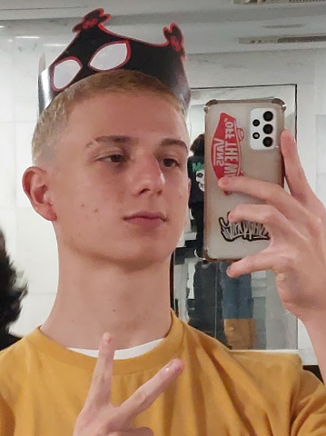

Sobre mim

Meu nome é Arthur D. Marchetti, tenho 16 anos sou estudante do segundo ano curso técnico em desenvolvimento de sistemas do Sesi Senai de Florianópolis.
Fiz este site inteiro "sozinho" (eu e meu amigo Eduardo Borges ajudamos um ao outro em seus portfolios online),
mas praticamente aprendemos tudo sozinhos em casa e sempre atualizando a cada conhecimento adquirido.
Bom, um pouco sobre mim: Nasci aqui em Florianópolis e sou filho único, sempre amei e sempre vou
amar essa minha cidade, já viajei para alguns lugares do Brasil como São Paulo, Bahia, Minas Gerais,
Amazonas e Rio Grande do Sul, e digo com a maior certeza do mundo que nenhuma cidade desses estados
se compara com a perfeição que é a Ilha da Mágia. Preferencias bobas: Minha cor preferida
é vermelho, meu filme preferido é "À Espera De Um Milagre" (RECOMENDO MUITO) e serie
preferida é "Breaking Bad" (RECOMENDO MUITO TAMBÉM), minha comida preferida é Strogonoff (da minha vó),
torço para o gigante da colina Vasco Da Gama!
e minha grande inspiração como pessoa é meu falecido avô, meu sonho é se tornar o heroí que ele via em mim.
Nos estudos sou apaixonado principalmente nessa área técnica da
TI e quero muito trabalhar com back-end; Mas de estudos escolares mesmo eu gosto MUITO de hístoria.
Os meus hobbies são: Acadêmia, ver filmes, fazer trilhas, ir na praia, desenhar, andar de skate e brincar com
o meu gato (Eddie).
E é isso que eu me lembro por agora, obviamente se alguem for me conhecer vai aprender novas coisas sobre mim,
porém o que eu consigo falar é isso!
Muito obrigado (: